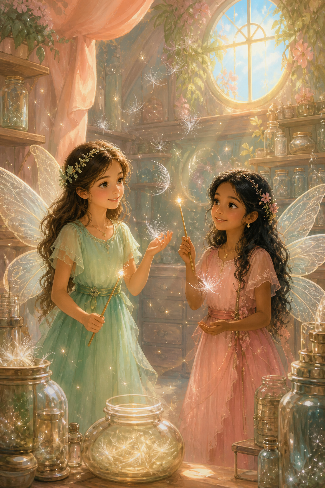

The Wish Hair FairiesWhen gloomy elves steal wishes
Every blown eyelash flies to the wish-hair fairies. Moira and Sthuthi must stop the gloomy elves — and find the one wish that could change everything.
Fairies, elves & a secret wish
Chapters
A Swish of Their Wands
The wish-hair fairies were very busy making wishes come true. Every time an old hair fell out of an eyelash of a person, they would make a wish and blow on it. The tiny wish-hair would fly to the wish-hair fairies and they would make it come true.
Moira and Sthuthi were two such wish-hair fairies. They loved making wishes come true with a swish of their wands. They got new orders every day. Thousands of wish-hairs were stored in the store room. When they touched the wish-hair they could hear the person’s wish. Then they would swish their wands and make it come true. Even the fairies’ wish-hairs were kept too. Moira and Sthuthi loved being wish-hair fairies. They spent loads of time helping each other.
Sthuthi and Moira were walking to the store room when they heard worried whispers inside a room. They decided to find out what was going on. Sthuthi knocked on the door hesitantly. It was opened by the head of the wish-hair fairies —
She looked very worried. Moira and Sthuthi were anxious to find out why.
“I’m so glad you’re here, girls. I was just going to ask someone to fetch you,” said the head fairy.
“What’s happened?” asked Moira.
“Well, the gloomy elves are up to mischief again. We caught one of them in the store room — he was trying to steal the wish-hairs,” replied the head fairy.
The gloomy elves were always up to mischief.
“I want you to find out what is going on,” said the head fairy.
“Okay,” they replied. As long as they were together it would be all right.
“How are we going to get in without being seen?” asked Sthuthi.
“Let’s disguise!” answered Moira.
So using what they could find they disguised themselves as elves. They even found four big leaves to cover their wings. They really did look like two elves!!
Disguise and a Village
As they entered the village, they saw a group of elves scolding a little elf.
“You knew that elves don’t believe in silly things like blowing a wish-hair,” an elf said.
“Why on Earth did you do such a silly thing?” said another.
Everyone was crowding around to tell the little elf what they thought of him. Sthuthi and Moira hid behind a bush. Even though they were in disguise, they didn’t particularly want to be seen by the elves.
“Well,” said the leader of the group, “we must continue our quest to spoil the day for all the fairies. Now form a line and let’s go to the fairy land — we’ve got snooping to do and wish-hairs to steal.”
Sthuthi looked worried. What if the elves stole all the wish-hairs? But Moira was grinning. Sthuthi knew she was plotting something and was eager to know what her plan was.
“What are you thinking, Moira?” asked Sthuthi.
“What if we offer to go and help them, and then mislead them back here somehow?” answered Moira.
“That’s a great idea!” exclaimed Sthuthi. “Let’s do it.”
So they walked to the elves. Sthuthi said, “Hello, gloomy elves, we are Raya and Mona. We couldn’t help overhearing your conversation and would love to help you in any way possible. We happen to know a short-cut to take you there.”
“Well, we would like to get there as soon as possible. I accept,” said the leader elf.
So they set off in the direction of another city full of elves just like the gloomy elves. When they reached the city, the two groups of elves were so surprised to see each other. They got very distracted and began to talk.
“Now to warn the fairies,” said Sthuthi.
She wrote something with her wand and blew it in the direction of fairyland. Now the fairies would be warned. The elves were still busy talking to each other.
“So far so good.”
The Long Way Round
After about an hour they finally got a message from fairyland. The elves were invited to tea and were still eating the scrumptious meal in front of them. This was great — they were trying to distract the elves for as long as possible so the rest of the wish-hair fairies had time to lock all the rooms before it was too late.
Finally the elves finished their tea and asked them to lead the way. So altogether they continued walking. The elves didn’t know that they were going in the wrong lane and followed behind, remembering all the fun they had. They led them into a forest full of the elves’ favourite fruit — gloomy apples.
Usually the elves were very gloomy and sad, always up to mischief. But after all the adventure — meeting the elves and seeing their favourite fruit — they felt quite happy. They made baskets with grass and picked the fruits. Soon they finished plucking them and continued the journey.
Soon they reached a river. They were all very hot and decided to bathe there. Sthuthi and Moira didn’t get in the river as their costumes would get ruined. So they sat near the river on a bench, enjoying the scenery. The elves loved taking a bath in the river and were even showing off their swimming skills! The fairies couldn’t believe how cheerful and jolly the gloomy elves were. It was a surprise to see how different they were.
Once this was over, they set off again. The two fairies were wracking their brains thinking of other places to take them. Luckily, it began to rain and they took shelter under a tree. While the other elves were chatting about, the two of them wrote a letter to update the fairies. Finally it stopped raining and they began their journey.
Moira remembered a place where she’d seen lots of elves. Sthuthi agreed, as they had run out of ideas. So Moira led the way to the place. The elves were very familiar with the place — it was the elf park. They had come there loads of times. They got distracted and walked all around.
That’s when Sthuthi remembered the conversation about a little elf blowing a wish-hair. She decided to approach the elf and find out more. When she asked the elf about it he replied, “Well, I’ve never never never really liked being a gloomy elf, so I wished on a wish-hair so a wish I’ve always wanted would come true. But my brother caught me red-handed and told tales on me to Mum and Dad.”
“Oh, what did you wish for?” asked Sthuthi.
“I wished that we’d no longer be gloomy elves and make people’s lives miserable — but it’ll never come true,” he said.
Sthuthi’s eyes shone. This was the key to all their problems. She ran to Moira and told her the news.
“We just need to find their wish-hair and we’ll be able to save the day in time,” said Sthuthi.
“However brilliant it sounds, we won’t be able to find it in one day,” said Moira. Then that’s when she got a brainwave. “Sthuthi, what if we somehow distract the elves and run to the Identifier Helper Fairy Queen? She can easily use her magic to find the one wish-hair,” said Moira.
“Well, what if we drop them off at the thunder fairies? It’s only a few metres from there,” suggested Sthuthi.
So when the elves were done, they took them to the thunder fairies. The two of them didn’t really go together — but the thunder fairies and wish-hair fairies were friends, so if they could convince them, then it would be fine. They quickly explained everything while the elves were distracted with their surroundings, showing their wings as proof that they really were wish-hair fairies (every type of fairy had a different type of wing).
Rainbow Elves
The thunder fairies were delighted to help, so the two of them sped off to the Helper Fairy Queen. The queen used her powers and found the hair. She also sent a letter with thrice the amount of fairy dust to go extra fast. They weren’t very far away from the wish-hair fairy village, so it reached them very fast. They immediately made the wish-hair come true. Now they just needed to watch and wait.
Just then they saw the rainbow fairies fluttering above them. They combined all the colours together and made a huge rainbow cloud. Suddenly, after the help of a thunder fairy, it began to rain rainbow droplets. The elves’ bodies turned from gray to rainbow! The wish-hair had worked! The gloomy elves were now the rainbow elves! They no longer sulked or caused trouble for everyone. They were a cheerful, happy group of elves now.
The wish-hair fairies held a big party to celebrate. There were lots of desserts and savouries to munch on. Before the party was over, the head fairy gave a speech in honour of Sthuthi and Moira. She said, “I would like to thank Sthuthi and Moira for all their work. If it wasn’t for them the wish-hairs may have gotten stolen and we would be in serious trouble — not just among us, but even the head of all fairies would be disappointed. I also thank the thunder fairies, helper fairies and rainbow fairies for all their help. They played a very vital role in this quest. We could have never accomplished this without them.”
All the fairies applauded Sthuthi and Moira. They really deserved it!
The End